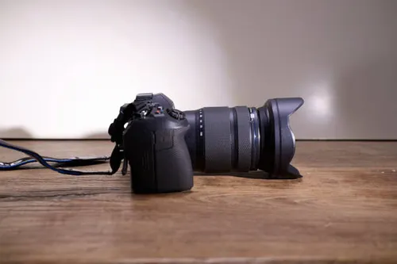
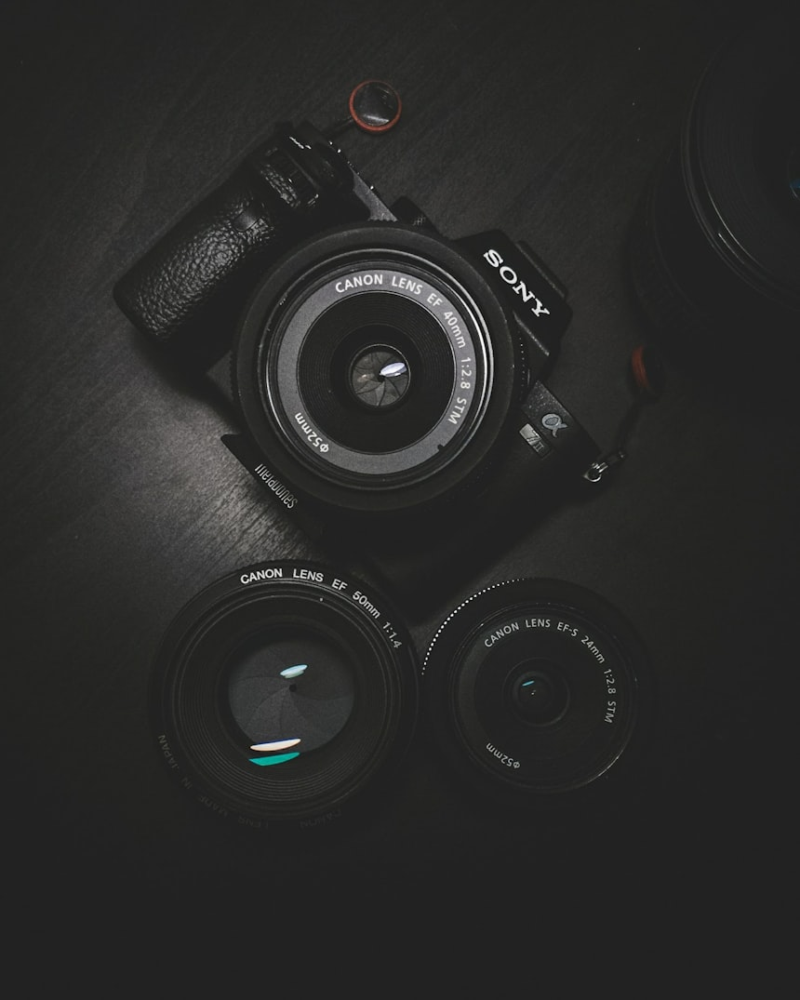

My Favorite Hobby: Photography
Freezing time, one click at a time.

Photography is more than just pointing a camera and pressing a button — it is an art form that trains your eye to see the world differently. Every shadow, every ray of light, and every fleeting expression becomes a potential masterpiece waiting to be captured.
I picked up photography three years ago and have not put the camera down since. From misty mountain mornings to vibrant street markets, there is always something worth preserving.
Why I Love Photography
- Capturing memories that last a lifetime
- Exploring nature and discovering hidden beauty
- Creative expression without limits
- Connecting with people through storytelling
- Constantly learning new techniques and styles

How to Get Started in Photography
- Choose a beginner-friendly camera (mirrorless or DSLR)
- Learn the exposure triangle: aperture, shutter speed, and ISO
- Practice composing shots using the rule of thirds
- Shoot in RAW format for more editing flexibility
- Edit your photos with free tools like Darktable or RawTherapee
- Share your work and get feedback from the community
"Photography is the story I fail to put into words." — Destin Sparks
Useful Resources
- Digital Camera World – Reviews, tutorials, and photography news
- Unsplash – Free high-resolution photos for inspiration
- Flickr – Share and discover photography from around the world